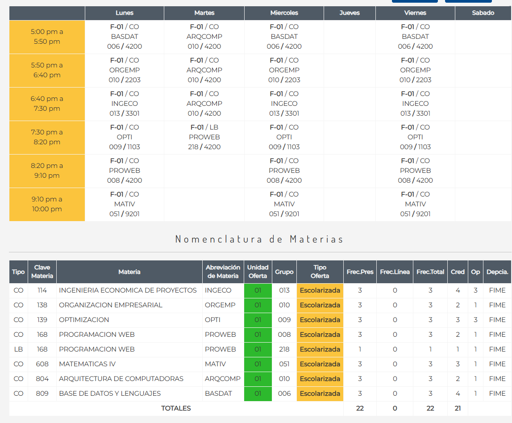

Ingeniería en Administración y Sistemas
Propósito:
Formar profesionistas en Ingeniería en Administración y Sistemas competentes al gestionar servicios de tecnología de la información, en el diseño de arquitecturas de bases de datos, redes y seguridad, utilizando las tecnologías de la información, comunicación, conocimiento, y aprendizaje digitales; capaces de liderar proyectos de gestión y administración para la solución integral y sostenible en las áreas de diseño, desarrollo y configuración de software, mediante el trabajo con equipos multidisciplinarios, mostrando una actitud de respeto y compromiso frente a los retos de una sociedad digital, empleando el pensamiento lógico, crítico y propositivo.
Ingeniería en Administración y Sistemas.
Mi Horario
